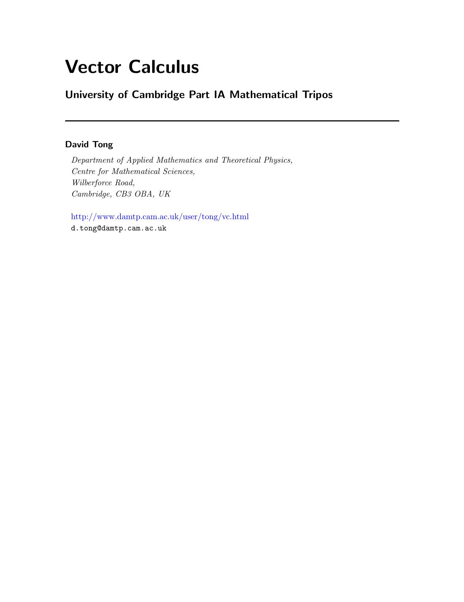

Vector Calculus
David Tong

0. Introduction
1. Curves
1.1 Differentiating the Curve
1.1.1 Tangent Vectors
1.1.2 The Arc Length
1.1.3 Curvature and Torsion
1.2 Line Integrals
1.2.1 Scalar Fields
1.2.2 Vector Fields
1.3 Conservative Fields
1.3.1 The Gradient
1.3.2 Back to Conservative Fields
1.3.3 An Application: Work and Potential Energy
1.3.4 A Subtlety
2. Surfaces (and Volumes)
2.1 Multiple Integrals
2.1.1 Area Integrals
2.1.2 Changing Coordinates
2.1.3 Volume Integrals
2.1.4 Spherical Polar and Cylindrical Polar Coordinates
2.2 Surface Integrals
2.2.1 Surfaces
2.2.2 Surfaces with Boundaries
2.2.3 Orientability
2.2.4 Scalar Fields
2.2.5 Vector Fields and Flux
2.2.6 A Sniff of the Gauss-Bonnet Theorem
3. Grad, Div and Curl
3.1 The Gradient
3.2 Div and Curl
3.2.1 Some Basic Properties
3.2.2 Conservative is Irrotational
3.2.3 Solenoidal Fields
3.2.4 The Laplacian
3.2.5 Some Vector Calculus Equations in Physics
3.3 Orthogonal Curvilinear Coordinates
3.3.1 Grad
3.3.2 Div and Curl
3.3.3 The Laplacian
4. The Integral Theorems
4.1 The Divergence Theorem
4.1.1 A Proof of the Divergence Theorem
4.1.2 Carl Friedrich Gauss (1777-1855)
4.2 An Application: Conservation Laws
4.2.1 Conservation and Diffusion
4.2.2 Another Application: Predator-Prey Systems
4.3 Green's Theorem in the Plane
4.3.1 George Green (1793-1841)
4.4 Stokes' Theorem
4.4.1 A Proof of Stokes' Theorem
4.4.2 George Gabriel Stokes (1819-1903)
4.4.3 An Application: Magnetic Fields
4.4.4 Changing Coordinates Revisited
5. The Poisson and Laplace Equations
5.1 Gravity and Electrostatics
5.1.1 Gauss' Law
5.1.2 Potentials
5.2 The Poisson and Laplace Equations
5.2.1 Isotropic Solutions
5.2.2 Some General Results
5.2.3 Integral Solutions
6 Tensors
6.1 What it Takes to Make a Tensor
6.1.1 Tensors as Maps
6.1.2 Tensor Operations
6.1.3 Invariant Tensors
6.1.4 Tensor Fields
Back to Home